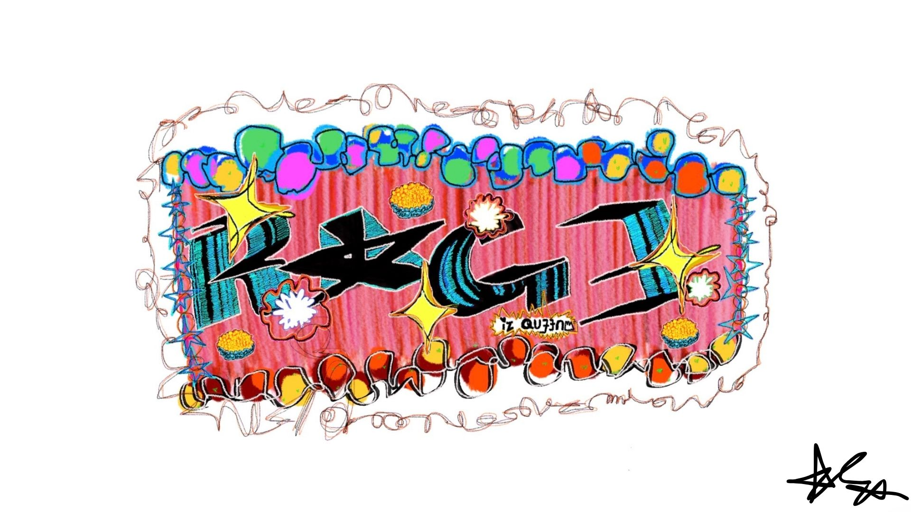

pearl and her delusional rage to be somebody

[rage iz queen, atiyah saleemah, 2026]
>No, I have never nor have I ever thought of killing anyone. That’s not what this article is about and that’s not all what Pearl was mainly about either. Pearl represents more than a psychotic maniac to me; Pearl represents a large part of me that so desperately wants to get off the farm. You know, the confinements of my reality, the place I’m currently in, the four walls of my room and the uncertainty that comes with not having a lot of money.
It’s a struggle to have dreams with optimism yet operating with a sense of fear that maybe they will never come true. That knees on the ground prayer of becoming a star is held together by a mustard seed and everything else is grit and tenacity born out of survival.
Pearl sobs not just because she didn’t get the audition, what she really cried about was the fact that her dream yet again felt so far away. Her desire to be desired was tarnished and whatever hope she had left to be a star…well her rage is what we seen her do to others. Because what if I say they were just collateral damage in the grand scheme of her life?
They were the obstacles she faced that all of us sane folks learn to jump over or let crumble us. I guess you could say she did a little bit of both. In this case, she allowed her anger to overpower her emotions so badly that it crumbled her spirit and she subconsciously sabotaged her destiny even more. It is due to in those moments, where all hope is lost that people will continue to break even more bridges than they’ve built because they have nothing else to lose.
I don’t want to be like that. I don’t want to let my reality because it didn’t turn out how I imagined it to be to harden my heart and make me susceptible to accepting that I’ll put my own self in danger to save myself.
I’ll finally listen to every naysayer and hater and become exactly what they wanted me to be; nothing.
I can’t have that and that’s what makes this life so hard, you guys.
Because what will I ever do if I have to waste another year of my life on this very farm I never wanted to raise cows and chickens on in the first place? What will I do if I have to fill out yet another application for a warehouse job? Or hear about how talented I am yet I’ve made absolutely no money from it since people were rapidly catching COVID-19?
I really don’t know and I really don’t have all the answers. That’s probably why I started a damn blog because therapy isn’t in the budget. My label didn’t give me enough in the advance, unfortunately.
★ starmoney